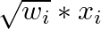

129 Analysis
129.1 Misc
- Pairwise Likelihood (original, mathy paper, factor analysis w/ordinal data paper, usage on customer survey data ($) paper)
- a special case of composite likelihood methods that uses lower-order conditional or marginal log-likelihoods instead of the full log-likelihood
- When the number of items is greater than five (p > 5), Full Information Likelihood (FIML) is only feasible when the Item Response Theory (IRT) framework is used. However, even in IRT, FIML becomes very computationally heavy as the number of factors increases. Using Pairwise likelihood is a suitable alternative
- Ignoring the survey design features (such as stratification, clustering and unequal selection probabilities) can lead to erroneous inferences on model parameters because of sample selection bias caused by informative sampling.
- It is tempting to expand the models by including among the auxiliary variables all the design variables that define the selection process at the various levels and then ignore the design and apply standard methods to the expanded model. The main difficulties with this approach are the following:
- Not all design variables may be known or accessible to the analyst
- Too many design variables can lead to difficulties in making inference from the expanded model
- The expanded model may no longer be of scientific interest to the analyst
- design-based approach can provide asymptotically valid repeated sampling inferences without changing the analyst’s model.
- resampling methods, such as the jackknife and the bootstrap for survey data, can provide valid variance estimators and associated inferences on the census parameters
- In other cases, it is necessary to estimate the model variance of the census parameters from the sample. The estimator of the total variance is then given by the sum of this estimator and the re-sampling variance estimator.
- Example: in an education study of students, schools (first stage sampling units) may be selected with probabilities proportional to school size and students (second stage units) within selected schools by stratified random sampling.
- see Surveys, Sampling Methods >> Probabilistic Sampling Methods >> Multi-Stage Sampling
- Again, ignoring the survey design and using traditional methods for multi-level models can lead to erroneous inferences in the presence of sample selection bias
- In the design-based approach, estimation of variance component parameters of the model is more difficult than that of regression parameters.
- asymptotically valid even when the sample sizes within sampled clusters (level 1 units) are small, unlike some of the existing methods, but knowledge of the joint inclusion probabilities within sampled clusters is required.
- Large variations in cluster sizes may cause an issue, see Lumley
- a special case of composite likelihood methods that uses lower-order conditional or marginal log-likelihoods instead of the full log-likelihood
- Example of debiasing a dataset by other means than by weighting by population
- The economist created a death-by-covid risk probability model. They had a bunch of medical records with patient comorbidities, age, gender, positive test, hospitalized, death/no death, etc. (people with other illnesses already) and were worried that the people who tested positive but just stayed at home (i.e. no medical records like younger people). Not correcting for this bias of undetected cases would bias their risk probabilities.
- Failing to correct this bias would lead to underestimating the risks associated with comorbidities, and to overestimating the risks among those without listed conditions.
- They used an estimated metric, national cfr per age group per gender per week (separate dataset from CDC which has stats on groups with and without medical records). When a week’s sample cfr didn’t match that week’s national cfr, they would randomly sample people in the dataset who didn’t meet the selection criteria (i.e. positive covid test) and assign them a positive test. They continued to add these reclassified people to that week’s sample until the sample cfr matched the national cfr. Thus, debiasing they’re data set.
- Thought this was an interesting case because it used a estimated metric to “weight” subgroups within their sample to make it more representative of the “true” population.
- Also see Projects >> Rolling COVID-19 CFR
- https://www.economist.com/graphic-detail/2021/03/11/how-we-built-our-covid-19-risk-estimator
- The economist created a death-by-covid risk probability model. They had a bunch of medical records with patient comorbidities, age, gender, positive test, hospitalized, death/no death, etc. (people with other illnesses already) and were worried that the people who tested positive but just stayed at home (i.e. no medical records like younger people). Not correcting for this bias of undetected cases would bias their risk probabilities.
- Ceiling or floor effects occur when the tests or scales are relatively easy or difficult such that substantial proportions of individuals obtain either maximum or minimum scores and that the true extent of their abilities cannot be determined.
- Sounds like censoring (See Regression, Other >> Censored and Truncated Data)
- Ceiling or floor effects alone would induce, respectively, attenuation or inflation in mean estimates. And both ceiling and floor effects would result in attenuation in variance estimates.
- {DACF}
- Recovers mean and variance given data with ceiling/floor effects
- Allows for mean comparison tests such as t-test and ANOVA for data with ceiling/floor effects
129.2 Weights
- Misc
- Surveys responses are often biased due to coverage error, sampling error and non-response bias. Weighting is often an important step when analyzing survey data. For each unit in the sample (e.g. respondent to a survey), we attach a weight that can be understood as the approximate number of people from the target population that this respondent represents. Weights adjust the sample distribution more towards the population distribution

- The green bars show the sample with weights applied.
- The weighted average will also be less biased to the extent the response is correlated with respondent’s age.
- The weighted distribution is not fully corrected, mainly because of bias-variance considerations
- Packages
- Surveys responses are often biased due to coverage error, sampling error and non-response bias. Weighting is often an important step when analyzing survey data. For each unit in the sample (e.g. respondent to a survey), we attach a weight that can be understood as the approximate number of people from the target population that this respondent represents. Weights adjust the sample distribution more towards the population distribution
- Types
- Frequency Weights
- Steps
- Remove the duplicate observations
- Duplicates don’t add any additional information
- Weight each observation by the square root of number of times it appeared in the original dataset, 
- SSE needs to be divided by n - k + 1
- where n is the number of observations in the original dataset and k is the number of predictors in the regression
- Remove the duplicate observations
- Steps
- Importance Weights - focus on how much each row of the data set should influence model estimation. These can be based on data or arbitrarily set to achieve some goal.
- Analytic Weights - If a data point has an associated precision, analytic weighting helps a model focus on the data points with less uncertainty (such as in meta-analysis).
- (Inverse) Probability Weights (wiki) - {{balance}} refers to this type as “inverse propensity weights”
Also see below, {{balance}} >> Steps >> Adjust >> Options
Used to reduce bias when respondents have different probabilities of selection Adjusts a non-random sample to represent a population by weighting the sample units. It assumes two samples: A sample of respondents to a survey (or in a more general framework, a biased panel).
A sample of a target population, often referred to as "reference sample" or "reference survey." This sample includes a larger coverage of the population or a better sampling properties in a way that represents the population better. It often includes only a limited number of covariates and doesn't include the outcome variables (the survey responses). In different cases it can be the whole target apopulation (in case it is available), a census data (based on a survey) or an existing survey.Propensity Score - the probability to be included in the sample (the respondents group) conditioned on the characteristics of the unit Let pi = Pr{i ∈ S | xi} with i = 1 … n.
i is the unit (aka respondent), n is the total number of respondents, S is the sample of respondents X is a set of covariates that are available for the sample and the target population pi is the estimated probabilities of being in the sample using logistic regression Data includes both sample and target population outcome is a binary variable (1/0): 1 = Sample, 0 = Target covariates are X Also see [Econometrics, General](Econometrics, General) >> Propensity Score MatchingCalculate Weights
.png)
- di is …?
- Covariate Balancing Propensity Scores (CBPS)
- When estimating propensity score, there is often a process of adjusting the model and choosing the covariates for better covariate balancing. The goal of CBPS is to allow the researcher to avoid this iterative process and suggest an estimator that is optimizing both the propensity score and the balance of the covariates together.
- Main advantage is in cases when the researcher wants better balance on the covariates than traditional propensity score methods - because one believes the assignment model might be misspecified and would like to avoid the need to fit followup models to improve the balance of the covariates.
- Also see
- Misc >> packages >> {CBPS}
- {{balance}} >> Steps >> Adjust >> Options
- Frequency Weights
- {{balance}}

- A Python package for adjusting biased data samples.
- Provides eda, weights calculation, comparison of variables before and after weighting
- Steps:
- EDA:
- Understanding the initial bias in the sample data relative to a target population we would like to infer
- Summary Statistics
- The limitation of using the mean is that it is not easily comparable between different variables since they may have different variances.
- ASMD (Absolute Standardized Mean Deviation) measures the difference between the sample and target for each covariate.
- It uses weighted average and std.dev for the calculations (e.g.: to take design weights into account).
- This measure is the same as taking the absolute value of Cohen’s d statistic (also related to SSMD), when using the (weighted) standard deviation of the population.
- Not sure why it says “(weighted)” when it’s the std.dev of the population since weights are applied to sample data. Maybe the population estimate is itself a weighted calculation.
- Guidelines on effect size for Cohen’s D should apply here, too.
- For categorical variables, the ASMD can be calculated as the average of the ASMD applied to each of the one-hot encoding of the categories of the variable
- Also see
- Post-Hoc Analysis, general >> Bayesian >> Cohen’s D, SSMD
- Post-Hoc Analysis, Mixed Effects >> Cohen’s D
- Visualizations
- Q-Q plot (continuous)

- The closer the line is to the 45-degree-line the better (i.e.: the less bias is observed in the sample as compared to the target population).
- Bar Plots (categorical)

- Q-Q plot (continuous)
- Calculate Weights:
- Adjust the data to correct for the bias by producing weights for each unit in the sample based on propensity scores
- Preprocessing (“using best practices in the field”):
- Transformations are done on both the sample dataframe and the target dataframe together
- Missing values - adds a column ‘_is_na’ to any variable that contains missing values
- Considered as a separate category for the adjustment
- Feature Engineering
- Continuous - bucketed into 10 quantiles buckets.
- Categorical - rare categories (with less than 5% prevalence) are grouped together so to avoid overfitting rare events
- Methods
- Inverse Propensity Weighting (IPW)
Coefficients, parameters of the fitted models are available
See above, Types >> (Inverse) Probability Weights Using LASSO logistic regression keeps the inflation of the variance as minimal as possible while still addressing the meaningful differences in the covariates between the sample and the target
Design Effect (
max_de) for tuning penalty factor, λ, and the trimming ratio parameter- A measure of the expected impact of a sampling design on the variance of an estimator for some parameter
max_de=X- the regularization parameter and the trimming ratio parameter are chosen by a grid search over the 10 models with the max design effect value- Default is 1.5
- Assumption: larger design effect often implies better covariate balancing.
- Within these 10 models, the model with the smallest ASMD is chosen.
max_de=None- optimization is performed by cross-validation of the logistic model- penalty factor, λ, is chosen when the MSE is at most 1 standard error from the minimal MSE
- the trimming ratio parameter is set by the user, and default to 20
- Covariate Balancing Propensity Scores (CBPS)
- Estimates the propensity score in a way that optimizes prediction of the probability of sample inclusion as well as the covariates balance.
- Also see
- Types >> Covariate Balancing Propensity Scores (CBPS)
- Misc >> packages >> {CBPS}
- Design Effect (
max_de)- a measure of the expected impact of a sampling design on the variance of an estimator for some parameter
- default is 1.5; If “None”, then optimization is unconstrained
- Post-Stratification
- Inverse Propensity Weighting (IPW)
- Post-processing of the weights:
- Trims - trims the weights in order to avoid overfitting of the model and unnecessary variance inflation.
- Options
- Mean-Ratio - ratio from above according to which the weights are trimmed by mean(weights) * ratio. Default is 20.
- Percentile - winsorization is applied
- Options
- Normalizing to population size - weights can be described as approximating the number of units in the population this unit of the sample represents.
- Trims - trims the weights in order to avoid overfitting of the model and unnecessary variance inflation.
- Compare data with and without weights
- Evaluate the final bias and the variance inflation after applying the fitted weights.
- Compares ASMD score (See EDA), Design Effect, Model proportion deviance explained (if inverese propensity weighting method was used)
- ASMD: since categorical variables are hot-encoded, a comparison (with/without weights) is made for each level
- Comparison of means is available
- Similar charts used in EDA are available that show a comparison between weighted/not weighted
- Response Rates with/without weights
- Effects on outcome variable
- EDA:
- A Python package for adjusting biased data samples.
129.3 Modeling
- Tidymodels
- Tidymodels
- Frequency weights are used for all parts of the preprocessing, model fitting, and performance estimation operations.
- This includes v-fold CV splits for now (see Using case weights with tidymodels for details)
- Importance weights only affect the model estimation and supervised recipes steps (i.e. depend on the outcome variable).
- Not used with yardstick functions for calculating measures of model performance.
- Frequency weights are used for all parts of the preprocessing, model fitting, and performance estimation operations.
- Example: Importance weights
- Tidymodels
training_sim <-
training_sim %>%
mutate(
case_wts = ifelse(class == "class_1", 60, 1),
case_wts = parsnip::importance_weights(case_wts)
)
set.seed(2)
sim_folds <- vfold_cv(training_sim, strata = class)
sim_rec <-
recipe(class ~ ., data = training_sim) %>%
step_ns(starts_with("non_linear"), deg_free = 10) %>%
step_normalize(all_numeric_predictors())
lr_spec <-
logistic_reg(penalty = tune(), mixture = 1) %>%
set_engine("glmnet")
lr_wflow <-
workflow() %>%
add_model(lr_spec) %>%
add_recipe(sim_rec) %>%
add_case_weights(case_wts)
cls_metrics <- metric_set(sensitivity, specificity)
grid <- tibble(penalty = 10^seq(-3, 0, length.out = 20))
set.seed(3)
lr_res <-
lr_wflow %>%
tune_grid(resamples = sim_folds, grid = grid, metrics = cls_metrics)
autoplot(lr_res) # calibration curves- Description
- Binary outcome; lasso
- “class_1” (80 obs) is severely imbalanced with “class_2” (4920)
- class_1 observations get a weight of 60 since 4920/80 = 61.5 which is ~ 60
recipewill automatically detect the weights (pretty sure it doesn’t matter whether on no “case_wts” is included in formula, e.g. class ~ .)- Since these are performance weights and step_ns and step_normalize don’t depend on the outcome variable (i.e. supervised), case weights are not used in these transformations.
- Steps
- add “case_wts” variable to df
- use
add_case_weightsfunction in workflow code
- Remove the case weights from a workflow
lr_unwt_wflow <-
lr_wflow %>%
remove_case_weights()- Useful if you want to make a comparison between models